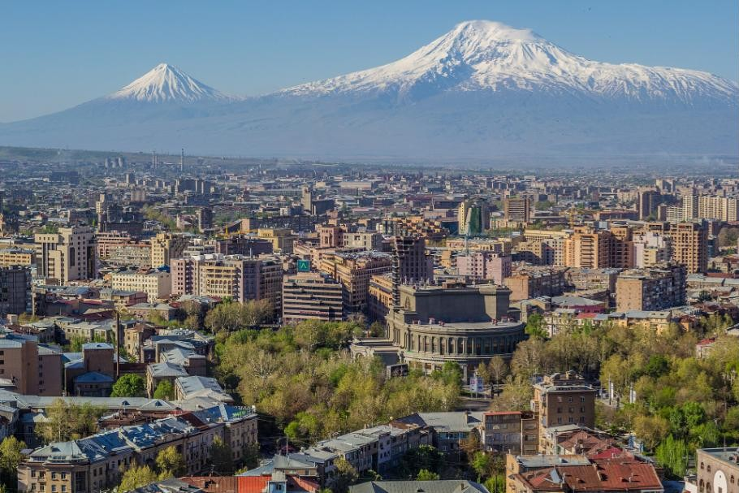
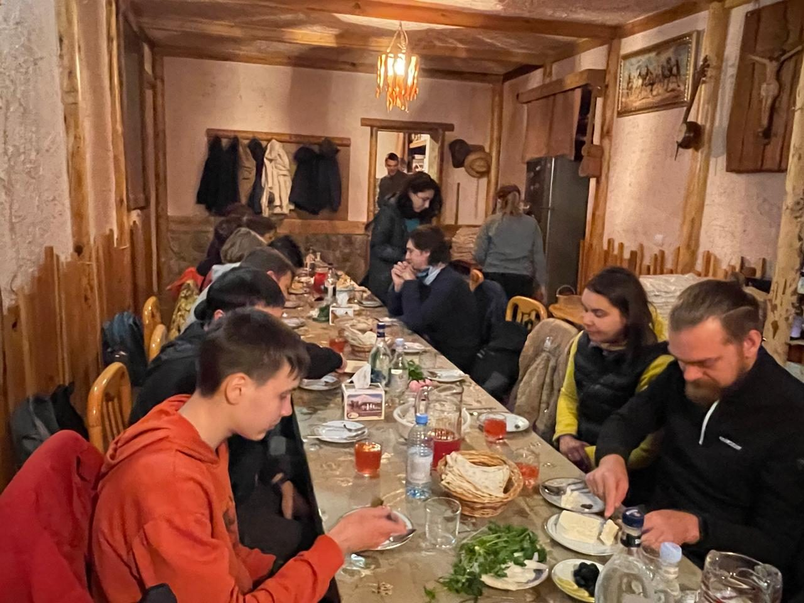
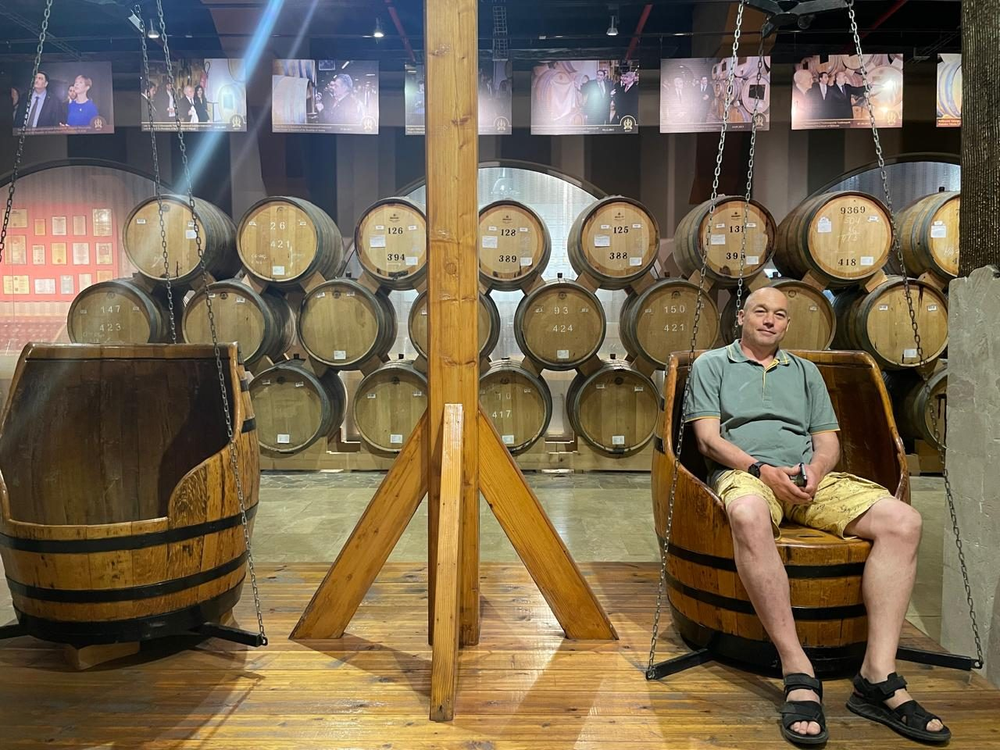
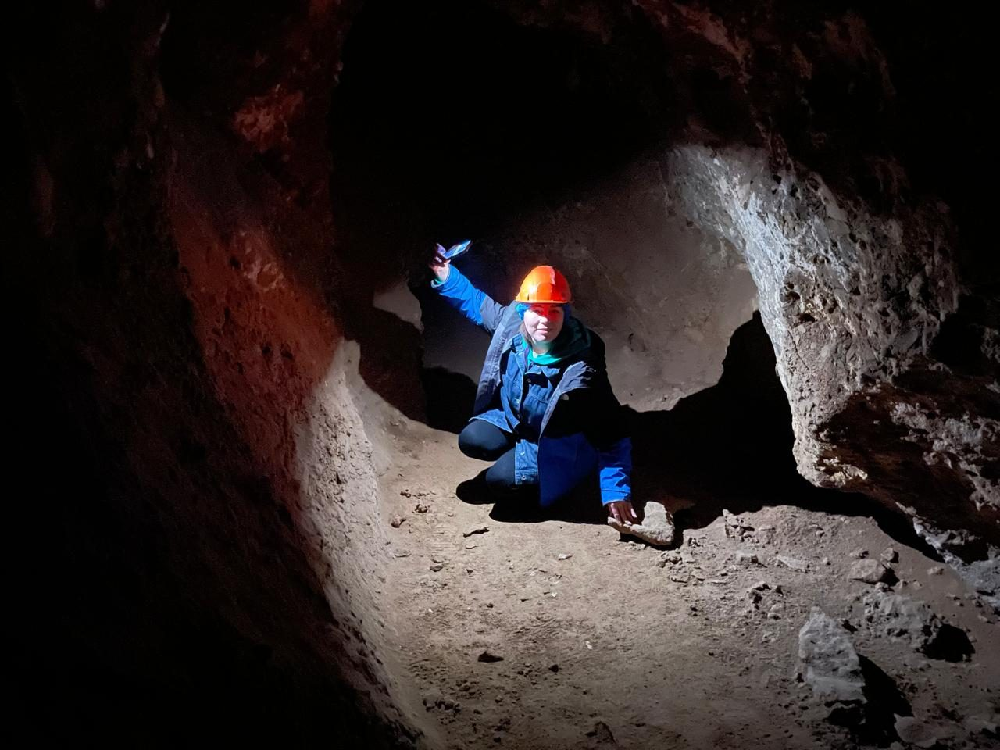
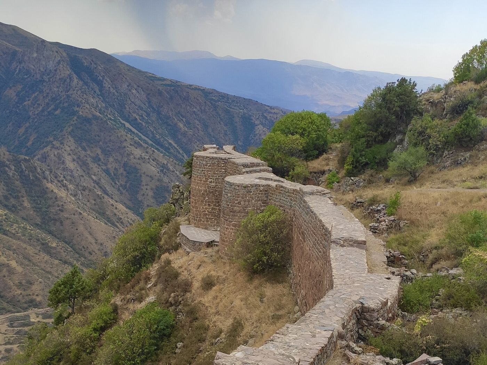
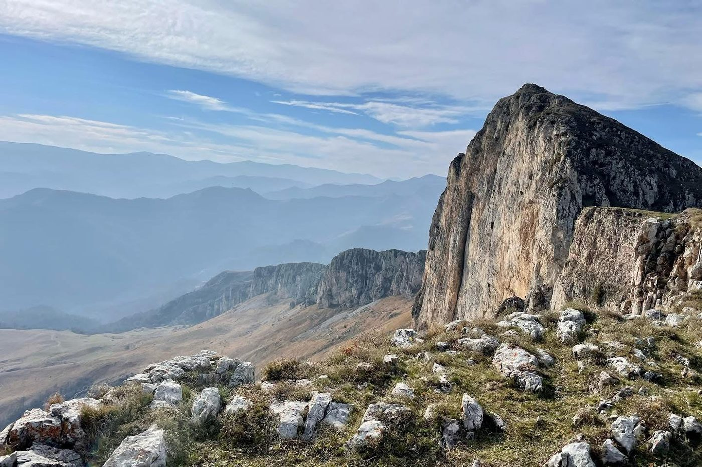
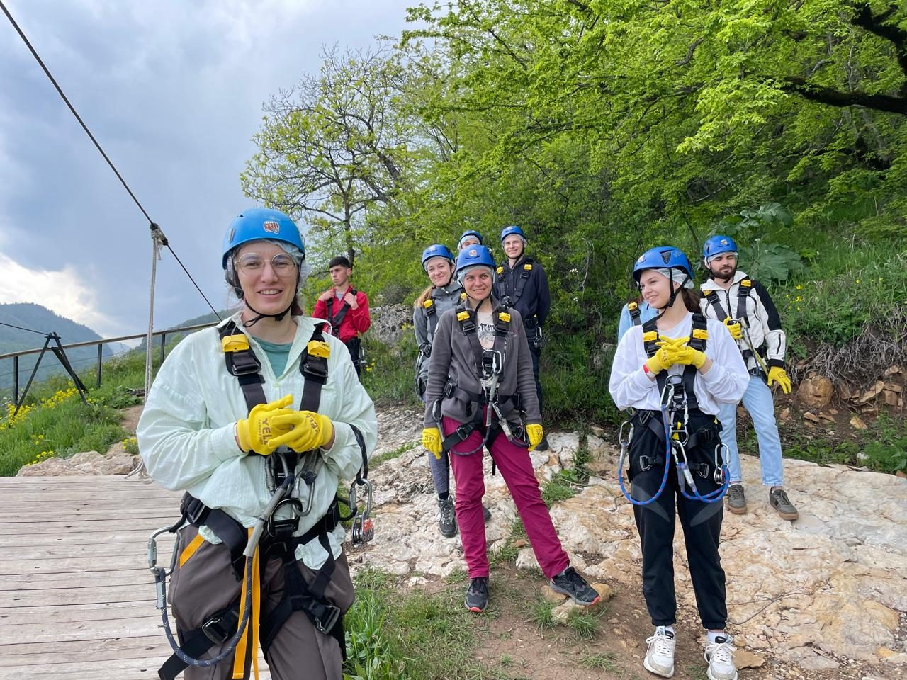

<title>Экстрим вайн тур — White Irbis</title>
<meta property="og:type" content="website">
<meta property="og:site_name" content="White Irbis">
<meta property="og:title" content="Экстрим вайн тур — White Irbis">
<meta property="og:description" content="5 дней по Армении: вина, коньяк и фруктовые водки — и приключения: поход, скалы, джипы, лошади, зиплайн.">
<meta property="og:url" content="https://scmam-rgb.github.io/white-irbis/extreme-wine/">
<meta property="og:image" content="https://scmam-rgb.github.io/white-irbis/extreme-wine/img/preview.jpg">
<meta property="og:image:width" content="1200">
<meta property="og:image:height" content="630">
<meta name="twitter:card" content="summary_large_image">
<link rel="icon" href="favicon.ico" sizes="any">
<link rel="icon" type="image/png" sizes="32x32" href="img/favicon-32.png">
<link rel="apple-touch-icon" href="img/apple-touch-icon.png">
<link rel="manifest" href="manifest.webmanifest">
<meta name="apple-mobile-web-app-title" content="Экстрим вайн тур">
<meta name="theme-color" content="#121212">
<meta name="description" content="Экстрим вайн тур White Irbis: 5 дней по Армении — Van Ardi, Ереванский коньячный завод, Old Bridge, Иджеван; поход, скалы, джиппинг, лошади и зиплайн.">
<link rel="preconnect" href="https://fonts.googleapis.com">
<link rel="preconnect" href="https://fonts.gstatic.com" crossorigin>
<link rel="stylesheet" href="https://fonts.googleapis.com/css2?family=Oswald:wght@300;400;500;600;700&family=Rubik:wght@400;500;600&family=Noto+Sans+Armenian:wdth,wght@62.5..100,400..700&display=swap">
<style>
:root{
  --ink:#121212; --paper:#F7F4EC; --card:#EEEADF; --line:#DDD6C3; --muted:#6B6A62;
  --eye:#FAEB0F; --eye-ink:#121212; --deep:#121212; --on-deep:#F7F4EC; --on-deep-muted:#B9B5A8;
  --display:'Oswald','Arial Narrow',Arial,sans-serif; --body:'Rubik','Segoe UI',Arial,sans-serif; --wrap:1120px;
}
@media (prefers-color-scheme: dark){:root:not([data-theme="light"]){
  --ink:#EFEBE0; --paper:#161614; --card:#201F1C; --line:#34322D; --muted:#A39F92; --deep:#0B0B0A; color-scheme:dark}}
:root[data-theme="dark"]{--ink:#EFEBE0; --paper:#161614; --card:#201F1C; --line:#34322D; --muted:#A39F92; --deep:#0B0B0A; color-scheme:dark}
*{box-sizing:border-box}
body{margin:0;background:var(--paper);color:var(--ink);font-family:var(--body);font-size:17px;line-height:1.55;-webkit-font-smoothing:antialiased}
img{max-width:100%;display:block}
a{color:inherit}
h1,h2,h3{font-family:var(--display);font-weight:600;line-height:1.05;margin:0;text-wrap:balance}
p{margin:0}
.wrap{max-width:var(--wrap);margin:0 auto;padding-inline:max(20px,env(safe-area-inset-left,0px))}
section{padding-block:80px}
.eyebrow{font-size:13px;font-weight:600;letter-spacing:.16em;text-transform:uppercase;color:var(--muted)}
.h2{font-size:clamp(32px,5vw,52px);text-transform:uppercase;margin-top:10px}
.lead{font-size:19px;color:var(--muted);max-width:60ch;margin-top:14px}
.credit{font-size:12px;color:var(--muted);margin-top:6px}
:focus-visible{outline:3px solid var(--eye);outline-offset:3px}
html:not([lang="ru"]) [lang="ru"], html:not([lang="en"]) [lang="en"], html:not([lang="hy"]) [lang="hy"]{display:none!important}
html[lang="hy"] body{font-family:"Noto Sans Armenian",var(--body)}
html[lang="hy"] h1,html[lang="hy"] h2,html[lang="hy"] h3,html[lang="hy"] .cta,html[lang="hy"] .alt,html[lang="hy"] .facts dd,html[lang="hy"] .day h3{font-family:"Noto Sans Armenian",var(--display);font-stretch:75%;font-weight:700}
html[lang="hy"] .hero h1{font-size:clamp(44px,7vw,92px)}

.top{position:absolute;inset:0 0 auto;z-index:3}
.top .wrap{display:flex;align-items:center;justify-content:space-between;padding-block:18px}
.top img{width:110px;height:110px}
.lang{display:flex;gap:4px;background:rgba(18,18,18,.55);border-radius:6px;padding:4px}
.lang button{font:600 14px var(--body);color:var(--on-deep);background:none;border:0;padding:6px 12px;border-radius:4px;cursor:pointer}
.lang button[aria-pressed="true"]{background:var(--eye);color:var(--eye-ink)}

.hero{position:relative;background:var(--deep);color:var(--on-deep);padding:0;overflow:hidden}
.hero-media{position:absolute;top:0;bottom:0;right:0;left:50%}
.hero-media img,.hero-media video{position:absolute;inset:0;width:100%;height:100%;object-fit:cover}
.hero-media video{opacity:0;transition:opacity .6s}
.hero.on .hero-media video{opacity:1}
.hero-media::after{content:"";position:absolute;inset:0;background:none;box-shadow:inset 10px 0 0 var(--eye)}
.hero .wrap{position:relative;z-index:2;min-height:660px;padding-block:170px 64px;display:flex;flex-direction:column;justify-content:flex-end;gap:20px}
.hero .alt{font-family:var(--display);letter-spacing:.12em;text-transform:uppercase;color:var(--eye);font-size:15px}
.hero h1{font-size:clamp(54px,9vw,120px);text-transform:uppercase}
.hero h1 em{font-style:normal;color:var(--eye)}
.hero .sub{font-size:clamp(18px,2vw,22px);max-width:34ch}
.row{display:flex;flex-wrap:wrap;gap:16px 28px;align-items:center}
.cta{display:inline-flex;background:var(--eye);color:var(--eye-ink);font-family:var(--display);font-size:20px;text-transform:uppercase;letter-spacing:.06em;padding:14px 26px;border-radius:4px;text-decoration:none;font-weight:600}
.price-chip{font-family:var(--display);font-size:30px}
.price-chip small{font-family:var(--body);font-size:14px;color:var(--on-deep-muted);margin-left:6px}
@media (max-width:900px){.hero-media{left:0}.hero-media::after{background:linear-gradient(180deg,rgba(10,10,9,.45),rgba(10,10,9,.15) 30%,rgba(10,10,9,.9) 75%);box-shadow:none}}

.facts{background:var(--deep);color:var(--on-deep);padding-block:0 40px}
.facts dl{display:grid;grid-template-columns:repeat(4,1fr);margin:0;border-top:1px solid #2E2D29}
.facts div{padding:20px 18px;border-right:1px solid #2E2D29}
.facts div:last-child{border-right:0}
.facts dt{font-size:12px;letter-spacing:.14em;text-transform:uppercase;color:var(--on-deep-muted)}
.facts dd{margin:6px 0 0;font-family:var(--display);font-size:24px}
@media (max-width:760px){.facts dl{grid-template-columns:1fr 1fr}.facts div:nth-child(2){border-right:0}.facts div{border-bottom:1px solid #2E2D29}}

.days{display:flex;flex-direction:column;gap:56px;margin-top:40px}
.day{display:grid;grid-template-columns:1fr 1fr;gap:40px;align-items:start}
.day:nth-child(even) .media{order:2}
.media{display:grid;gap:12px}
.media img{width:100%;aspect-ratio:3/2;object-fit:cover;border-radius:6px}
.day h3{font-size:34px;text-transform:uppercase}
.day .num{font-family:var(--display);font-size:80px;font-weight:700;line-height:.9;opacity:.12}
.plan{list-style:none;padding:0;margin:18px 0 0;display:flex;flex-direction:column;gap:10px}
.plan li{display:grid;grid-template-columns:64px 1fr;gap:12px;border-top:1px solid var(--line);padding-top:10px}
.plan b{font-family:var(--display);font-weight:600;font-size:18px}
@media (max-width:860px){.day{grid-template-columns:1fr;gap:18px}.day:nth-child(even) .media{order:0}}

.hv{position:relative;display:block;overflow:hidden;border-radius:6px}
.hv video{position:absolute;inset:0;width:100%;height:100%;object-fit:cover;opacity:0;transition:opacity .45s;pointer-events:none}
.hv.on video{opacity:1}
.hv i{position:absolute;right:10px;bottom:10px;width:34px;height:34px;border-radius:50%;background:rgba(18,18,18,.62)}
.hv i::after{content:"";position:absolute;left:13px;top:10px;border-left:11px solid var(--eye);border-top:7px solid transparent;border-bottom:7px solid transparent}
.hv.on i{opacity:0}

.inc{background:var(--deep);color:var(--on-deep)}
.inc .eyebrow{color:var(--on-deep-muted)}
.inc-grid{display:grid;grid-template-columns:1.2fr 1fr;gap:40px;margin-top:36px}
.inc h3{font-size:24px;text-transform:uppercase;color:var(--eye);margin-bottom:12px}
.inc ul{list-style:none;padding:0;margin:0;display:flex;flex-direction:column;gap:9px}
.inc li{padding-left:22px;position:relative}
.inc li::before{content:"";position:absolute;left:0;top:.6em;width:9px;height:9px;background:var(--eye);border-radius:2px}
.inc .no li::before{background:var(--on-deep-muted)}
@media (max-width:760px){.inc-grid{grid-template-columns:1fr}}

.who{display:grid;grid-template-columns:repeat(3,1fr);gap:20px;margin-top:32px}
.who div{background:var(--card);border-radius:6px;padding:26px}
.who h3{font-size:24px;text-transform:uppercase}
.who p{color:var(--muted);margin-top:8px}
@media (max-width:760px){.who{grid-template-columns:1fr}}

.next{background:var(--card)}
.next .wrap{display:grid;grid-template-columns:1fr 1fr;gap:40px;align-items:center}
.next img{border-radius:6px;aspect-ratio:4/3;object-fit:cover;width:100%}
@media (max-width:760px){.next .wrap{grid-template-columns:1fr}}

.price{background:var(--eye);color:var(--eye-ink)}
.price .wrap{display:grid;grid-template-columns:1.2fr 1fr;gap:40px;align-items:center}
.big{font-family:var(--display);font-size:clamp(64px,10vw,116px);font-weight:700;line-height:.95}
.big small{display:block;font-size:.3em;font-weight:500;margin-top:8px}
.price ul{list-style:none;padding:0;margin:18px 0 0;display:flex;flex-direction:column;gap:6px}
.contact{background:var(--eye-ink);color:#F7F4EC;border-radius:6px;padding:30px;display:flex;flex-direction:column;gap:14px}
.contact h3{font-size:32px;text-transform:uppercase;color:var(--eye)}
.contact p{color:#CFCBBF}
.contact .cta{align-self:flex-start;white-space:nowrap}
.reqs{display:flex;flex-direction:column;gap:10px;border-top:1px solid #33322E;padding-top:14px}
.reqs dt{font-size:12px;letter-spacing:.08em;text-transform:uppercase;color:#A8A497}
.reqs dd{margin:2px 0 0;font-family:var(--display);font-size:24px}
.reqs a{color:#F7F4EC;text-decoration:none}
@media (max-width:760px){.price .wrap{grid-template-columns:1fr}}
footer{padding:28px 0;font-size:13px;color:var(--muted)}
/* slogan lockup: logo | FOLLOW THE / WHITE IRBIS — both lines optically the same width */
.lockup{display:flex;align-items:center;gap:20px;text-decoration:none}
.lockup img{flex:none}
.sl{display:inline-flex;flex-direction:column;align-items:flex-start;gap:.42em;font-family:Oswald,"Arial Narrow",Arial,sans-serif;font-size:22px;line-height:.82;text-transform:uppercase;white-space:nowrap;border-left:1px solid rgba(247,244,236,.3);padding:6px 0 6px 20px}
html[lang] .sl span,html[lang] .sl b{font-family:Oswald,"Arial Narrow",Arial,sans-serif;font-stretch:normal}
.sl .s1{font-size:.5em;font-weight:400;letter-spacing:.7254em;margin-right:-.7254em;color:rgba(247,244,236,.8)}
.sl .s2{font-size:1em;font-weight:600;letter-spacing:.06em;margin-right:-.06em;color:#F7F4EC}
.sl b{font-weight:600;color:#FAEB0F}
@media (max-width:520px){.lockup{flex-direction:column;align-items:flex-start;gap:12px}.sl{font-size:17px;border-left:0;padding:0}}
.msg{display:grid;grid-template-columns:repeat(2,minmax(0,1fr));gap:14px;width:100%;max-width:470px}.msg .cta{display:flex;align-items:center;justify-content:center;gap:10px;white-space:nowrap;padding:15px 12px;margin:0;align-self:stretch}.msg .cta svg{width:22px;height:22px;flex:none}
.msg .cta{background:transparent;color:var(--eye);border:2px solid var(--eye);border-radius:6px;transition:background .15s,color .15s}.msg .cta:hover,.msg .cta:focus-visible{background:var(--eye);color:var(--eye-ink)}
.reqs dd a[href^="mailto"]{font-size:.8em;overflow-wrap:anywhere}
@media (max-width:640px){.msg .cta{font-size:16px;letter-spacing:.03em;padding:14px 4px;gap:7px}.msg .cta svg{width:19px;height:19px}}

/* header spacing fix (Nov 2026) */
@media (max-width:1180px){.top nav{display:none}}
@media (max-width:640px){.hero .wrap{padding-top:200px!important}}
.inc .brief{margin-top:18px;color:var(--on-deep-muted);font-size:15px;border-left:3px solid var(--eye);padding-left:12px}

.plan li{grid-template-columns:86px 1fr}
.plan b{font-size:14px;letter-spacing:.06em;text-transform:uppercase;color:var(--muted);padding-top:2px}
.opt{display:inline-block;font-size:12px;font-weight:600;letter-spacing:.1em;text-transform:uppercase;background:var(--eye);color:var(--eye-ink);border-radius:3px;padding:2px 7px;margin-right:6px;vertical-align:2px}
.day.text{grid-template-columns:1fr}
.dg{display:grid;grid-template-columns:repeat(4,1fr);gap:16px;margin-top:32px}
.dg div{background:var(--card);border-radius:6px;padding:22px}
.dg b{display:block;font-family:var(--display);font-size:26px;text-transform:uppercase}
.dg span{color:var(--muted);font-size:15px}
html[lang="hy"] .dg b{font-family:"Noto Sans Armenian",var(--display);font-stretch:75%;font-weight:700}
@media (max-width:860px){.dg{grid-template-columns:repeat(2,minmax(0,1fr))}.dg b{font-size:21px;overflow-wrap:anywhere}}
.price .big.req{font-size:clamp(56px,8vw,96px)}
@media print{
  .lang,.msg,.row .cta,video,.hv i,.hv-badge{display:none!important}
  body{-webkit-print-color-adjust:exact;print-color-adjust:exact}
  section{padding-block:28px}
  .day,.dg,.inc-grid,.price .wrap,.facts{break-inside:avoid}
  .eyebrow,.h2,.lead{break-after:avoid}
  a{text-decoration:none}
}
</style>
<style id="hero-edge">@media (min-width:901px){.hero{--tl:calc(max(0px,(100vw - 1120px)/2) + 20px)}.hero-media{left:calc(var(--tl) + 640px)!important}.hero .wrap>*{max-width:600px}.hero h1{font-size:min(9vw,120px)}html[lang="ru"] .hero h1{font-size:min(9vw,120px)}html[lang="en"] .hero h1{font-size:min(9vw,120px)}html[lang="hy"] .hero h1{font-size:min(7vw,92px)}}</style>

<header class="top"><div class="wrap">
  <div class="lockup"><span class="sl"><span class="s1">Follow the</span><span class="s2">White <b>Irbis</b></span></span></div>
  <div class="lang" role="group" aria-label="Language"><button type="button" data-l="ru" aria-pressed="true">RU</button><button type="button" data-l="en" aria-pressed="false">EN</button><button type="button" data-l="hy" aria-pressed="false">ARM</button></div>
</div></header>

<section class="hero" id="top">
  <div class="hero-media" aria-hidden="true"><video src="vid/hero.mp4" muted loop playsinline preload="metadata"></video></div>
  <div class="wrap">
    <span class="alt"><span lang="ru">Армения · 5 дней / 4 ночи · круглый год</span><span lang="en">Armenia · 5 days / 4 nights · all year round</span><span lang="hy">Հայաստան · 5 օր / 4 գիշեր · ամբողջ տարին</span></span>
    <h1><span lang="ru">Экстрим<br><em>вайн</em> тур</span><span lang="en">Extreme<br><em>wine</em> tour</span><span lang="hy">Էքստրիմ<br><em>գինու</em> տուր</span></h1>
    <p class="sub"><span lang="ru">Днём — ущелья, скалы, джипы, лошади и зиплайн. За обедом — лучшие вина, коньяк и фруктовые водки Армении.</span><span lang="en">By day: gorges, rocks, jeeps, horses and a zipline. Over lunch: the best wines, brandy and fruit vodkas of Armenia.</span><span lang="hy">Ցերեկը՝ կիրճեր, ժայռեր, ջիպեր, ձիեր և զիփլայն։ Ճաշին՝ Հայաստանի լավագույն գինիները, կոնյակը և մրգային օղիները։</span></p>
    <div class="row"><a class="cta" href="#price"><span lang="ru">Хочу в тур</span><span lang="en">Book the tour</span><span lang="hy">Գրանցվել</span></a></div>
  </div>
</section>

<section class="facts"><div class="wrap"><dl>
  <div><dt><span lang="ru">Длительность</span><span lang="en">Duration</span><span lang="hy">Տևողություն</span></dt><dd><span lang="ru">5 дней / 4 ночи</span><span lang="en">5 days / 4 nights</span><span lang="hy">5 օր / 4 գիշեր</span></dd></div>
  <div><dt><span lang="ru">Регионы</span><span lang="en">Regions</span><span lang="hy">Մարզեր</span></dt><dd><span lang="ru">Юг, север, Котайк</span><span lang="en">South, north, Kotayk</span><span lang="hy">Հարավ, հյուսիս, Կոտայք</span></dd></div>
  <div><dt><span lang="ru">Дегустации</span><span lang="en">Tastings</span><span lang="hy">Համտեսներ</span></dt><dd><span lang="ru">Вино, коньяк, водки</span><span lang="en">Wine, brandy, vodka</span><span lang="hy">Գինի, կոնյակ, օղի</span></dd></div>
  <div><dt><span lang="ru">Активности</span><span lang="en">Activities</span><span lang="hy">Ակտիվություններ</span></dt><dd><span lang="ru">На выбор каждый день</span><span lang="en">A choice every day</span><span lang="hy">Ընտրությամբ ամեն օր</span></dd></div>
</dl></div></section>

<section id="program"><div class="wrap">
  <span class="eyebrow"><span lang="ru">Программа</span><span lang="en">Programme</span><span lang="hy">Ծրագիր</span></span>
  <h2 class="h2"><span lang="ru">Утром — приключение, в обед — дегустация</span><span lang="en">Adventure in the morning, tasting at lunch</span><span lang="hy">Առավոտյան՝ արկած, ճաշին՝ համտես</span></h2>
  <p class="lead"><span lang="ru">Активности выбираем по погоде и подготовке группы — можно спокойнее, можно экстремальнее.</span><span lang="en">We pick activities to suit the weather and the group: calmer or more extreme.</span><span lang="hy">Ակտիվությունները ընտրում ենք ըստ եղանակի և խմբի պատրաստվածության՝ կարելի է հանգիստ, կարելի է ավելի էքստրեմալ։</span></p>
  <div class="days"><article class="day"><div class="media"><span class="hv"><video src="vid/cascade.mp4" muted loop playsinline preload="none" aria-hidden="true"></video><i aria-hidden="true"></i></span></div><div><div class="num">01</div><h3><span lang="ru">День 1 · Эчмиадзин и Ван Арди</span><span lang="en">Day 1 · Etchmiadzin and Van Ardi</span><span lang="hy">Օր 1 · Էջմիածին և Վան Արդի</span></h3><ul class="plan"><li><b><span lang="ru">Утро</span><span lang="en">Morning</span><span lang="hy">Առավոտ</span></b><span><span lang="ru">Прилёт, встреча в аэропорту Звартноц</span><span lang="en">Arrival, meeting at Zvartnots Airport</span><span lang="hy">Ժամանում, դիմավորում «Զվարթնոց» օդանավակայանում</span></span></li><li><b><span lang="ru">День</span><span lang="en">Afternoon</span><span lang="hy">Ցերեկ</span></b><span><span lang="ru">Эчмиадзин, Кафедральный собор</span><span lang="en">Etchmiadzin Cathedral</span><span lang="hy">Էջմիածին, Մայր տաճար</span></span></li><li><b><span lang="ru">Обед</span><span lang="en">Lunch</span><span lang="hy">Ճաշ</span></b><span><span lang="ru">Винодельня Van Ardi: обед с дегустацией вин</span><span lang="en">Van Ardi winery: lunch with a wine tasting</span><span lang="hy">Van Ardi գինեգործարան՝ ճաշ գինու համտեսով</span></span></li><li><b><span lang="ru">Вечер</span><span lang="en">Evening</span><span lang="hy">Երեկո</span></b><span><span lang="ru">Ереван, заселение, вечерний сити-тур. Ужин — на ваш выбор</span><span lang="en">Yerevan: check-in and an evening city tour. Dinner at your choice</span><span lang="hy">Երևան՝ տեղավորում, երեկոյան քաղաքային շրջայց։ Ընթրիքը՝ ձեր ընտրությամբ</span></span></li></ul></div></article><article class="day"><div class="media"><span class="hv"><video src="vid/cognac.mp4" muted loop playsinline preload="none" aria-hidden="true"></video><i aria-hidden="true"></i></span></div><div><div class="num">02</div><h3><span lang="ru">День 2 · Котайк: ущелье, Гегард, Гарни</span><span lang="en">Day 2 · Kotayk: gorge, Geghard, Garni</span><span lang="hy">Օր 2 · Կոտայք՝ կիրճ, Գեղարդ, Գառնի</span></h3><ul class="plan"><li><b><span lang="ru">Утро</span><span lang="en">Morning</span><span lang="hy">Առավոտ</span></b><span><span class="opt"><span lang="ru">на выбор</span><span lang="en">your choice</span><span lang="hy">ընտրությամբ</span></span><span lang="ru">Поход в ущелье или к руинам монастыря Авуц Тар — по подготовке группы и погоде</span><span lang="en">A hike into the gorge or to the ruins of Havuts Tar monastery, depending on the group and the weather</span><span lang="hy">Արշավ կիրճով կամ դեպի Հավուց Թառ վանքի ավերակներ՝ ըստ խմբի պատրաստվածության և եղանակի</span></span></li><li><b><span lang="ru">День</span><span lang="en">Afternoon</span><span lang="hy">Ցերեկ</span></b><span><span lang="ru">Монастырь Гегард и храм Гарни</span><span lang="en">Geghard monastery and Garni temple</span><span lang="hy">Գեղարդի վանք և Գառնիի տաճար</span></span></li><li><b><span lang="ru">Обед</span><span lang="en">Lunch</span><span lang="hy">Ճաշ</span></b><span><span lang="ru">В деревенском доме, с дегустацией домашней водки</span><span lang="en">In a village home, with a homemade vodka tasting</span><span lang="hy">Գյուղական տանը՝ տնական օղու համտեսով</span></span></li><li><b><span lang="ru">Вечер</span><span lang="en">Evening</span><span lang="hy">Երեկո</span></b><span><span lang="ru">Ереван: дегустация на Ереванском коньячном заводе. Свободный вечер</span><span lang="en">Yerevan: tasting at the Yerevan Brandy Factory. Free evening</span><span lang="hy">Երևան՝ համտես Երևանի կոնյակի գործարանում։ Ազատ երեկո</span></span></li></ul></div></article><article class="day"><div class="media"><span class="hv"><video src="vid/flag.mp4" muted loop playsinline preload="none" aria-hidden="true"></video><i aria-hidden="true"></i></span></div><div><div class="num">03</div><h3><span lang="ru">День 3 · Юг: Хор Вирап и Арени</span><span lang="en">Day 3 · South: Khor Virap and Areni</span><span lang="hy">Օր 3 · Հարավ՝ Խոր Վիրապ և Արենի</span></h3><ul class="plan"><li><b><span lang="ru">Утро</span><span lang="en">Morning</span><span lang="hy">Առավոտ</span></b><span><span lang="ru">Монастырь Хор Вирап с видом на Арарат</span><span lang="en">Khor Virap monastery with a view of Ararat</span><span lang="hy">Խոր Վիրապի վանք՝ Արարատի տեսարանով</span></span></li><li><b><span lang="ru">День</span><span lang="en">Afternoon</span><span lang="hy">Ցերեկ</span></b><span><span class="opt"><span lang="ru">на выбор</span><span lang="en">your choice</span><span lang="hy">ընտրությամբ</span></span><span lang="ru">Село Арени: скалолазание (в тёплую погоду), пещера Магеллана и раскопки пещеры Арени-1 — или джиппинг к крепости Смбатаберд</span><span lang="en">Areni village: rock climbing (in warm weather), Magellan Cave and the Areni-1 cave excavations, or a jeep ride to Smbataberd fortress</span><span lang="hy">Արենի գյուղ՝ ժայռամագլցում (տաք եղանակին), Մագելանի քարանձավ և Արենի-1 քարանձավի պեղումներ, կամ ջիպով դեպի Սմբատաբերդ ամրոց</span></span></li><li><b><span lang="ru">Обед</span><span lang="en">Lunch</span><span lang="hy">Ճաշ</span></b><span><span lang="ru">Винодельня Old Bridge: дегустация вин региона</span><span lang="en">Old Bridge winery: a tasting of local wines</span><span lang="hy">Old Bridge գինեգործարան՝ տարածաշրջանի գինիների համտես</span></span></li><li><b><span lang="ru">Вечер</span><span lang="en">Evening</span><span lang="hy">Երեկո</span></b><span><span lang="ru">Возвращение в Ереван, свободный вечер</span><span lang="en">Back to Yerevan, free evening</span><span lang="hy">Վերադարձ Երևան, ազատ երեկո</span></span></li></ul></div></article><article class="day"><div class="media"><span class="hv"><video src="vid/meadow.mp4" muted loop playsinline preload="none" aria-hidden="true"></video><i aria-hidden="true"></i></span></div><div><div class="num">04</div><h3><span lang="ru">День 4 · Север: Севан и Тавуш</span><span lang="en">Day 4 · North: Sevan and Tavush</span><span lang="hy">Օր 4 · Հյուսիս՝ Սևան և Տավուշ</span></h3><ul class="plan"><li><b><span lang="ru">Утро</span><span lang="en">Morning</span><span lang="hy">Առավոտ</span></b><span><span lang="ru">Озеро Севан, монастырь Севанаванк на полуострове</span><span lang="en">Lake Sevan and Sevanavank monastery on the peninsula</span><span lang="hy">Սևանա լիճ և Սևանավանքը թերակղզում</span></span></li><li><b><span lang="ru">День</span><span lang="en">Afternoon</span><span lang="hy">Ցերեկ</span></b><span><span lang="ru">Горы Тавуша: прогулка на лошадях и самый длинный зиплайн Армении</span><span lang="en">Tavush mountains: horse riding and the longest zipline in Armenia</span><span lang="hy">Տավուշի լեռներ՝ ձիարշավ և Հայաստանի ամենաերկար զիփլայնը</span></span></li><li><b><span lang="ru">Обед</span><span lang="en">Lunch</span><span lang="hy">Ճաշ</span></b><span><span lang="ru">Обед, затем Иджеван: дегустация фруктовых водок и настоек на Иджеванском заводе</span><span lang="en">Lunch, then Ijevan: fruit vodka and liqueur tasting at the Ijevan factory</span><span lang="hy">Ճաշ, ապա Իջևան՝ մրգային օղիների և լիկյորների համտես Իջևանի գործարանում</span></span></li><li><b><span lang="ru">Вечер</span><span lang="en">Evening</span><span lang="hy">Երեկո</span></b><span><span lang="ru">Ереван: прощальный ужин с армянским хашем и фруктовыми водками</span><span lang="en">Yerevan: farewell dinner with Armenian khash and fruit vodkas</span><span lang="hy">Երևան՝ հրաժեշտի ընթրիք հայկական խաշով և մրգային օղիներով</span></span></li></ul></div></article><article class="day text"><div><div class="num">05</div><h3><span lang="ru">День 5 · Ереван и вылет</span><span lang="en">Day 5 · Yerevan and departure</span><span lang="hy">Օր 5 · Երևան և մեկնում</span></h3><ul class="plan"><li><b><span lang="ru">Утро</span><span lang="en">Morning</span><span lang="hy">Առավոտ</span></b><span><span lang="ru">Свободное время: рынок сладостей и сухофруктов</span><span lang="en">Free time: market of sweets and dried fruit</span><span lang="hy">Ազատ ժամանակ՝ քաղցրավենիքի և չրերի շուկա</span></span></li><li><b><span lang="ru">День</span><span lang="en">Afternoon</span><span lang="hy">Ցերեկ</span></b><span><span lang="ru">Вернисаж — ярмарка народного творчества, сувениры</span><span lang="en">Vernissage folk-art fair, souvenirs</span><span lang="hy">Վերնիսաժ՝ ժողովրդական արվեստի տոնավաճառ, հուշանվերներ</span></span></li><li><b><span lang="ru">Выезд</span><span lang="en">Departure</span><span lang="hy">Մեկնում</span></b><span><span lang="ru">Трансфер в аэропорт по времени вылета</span><span lang="en">Airport transfer to suit your flight</span><span lang="hy">Տրանսֆեր օդանավակայան՝ ըստ թռիչքի ժամի</span></span></li></ul></div></article></div>
</div></section>

<section><div class="wrap">
  <span class="eyebrow"><span lang="ru">Что попробуем</span><span lang="en">What we taste</span><span lang="hy">Ինչ կհամտեսենք</span></span>
  <h2 class="h2"><span lang="ru">Главные дегустации</span><span lang="en">The main tastings</span><span lang="hy">Գլխավոր համտեսները</span></h2>
  <div class="dg">
    <div><b>Van Ardi</b><span><span lang="ru">Обед с дегустацией вин на винодельне</span><span lang="en">Lunch and a wine tasting at the winery</span><span lang="hy">Ճաշ և գինու համտես գինեգործարանում</span></span></div>
    <div><b><span lang="ru">Ереванский коньяк</span><span lang="en">Yerevan brandy</span><span lang="hy">Երևանյան կոնյակ</span></b><span><span lang="ru">Дегустация на коньячном заводе</span><span lang="en">A tasting at the brandy factory</span><span lang="hy">Համտես կոնյակի գործարանում</span></span></div>
    <div><b>Old Bridge</b><span><span lang="ru">Вина Арени — родины одноимённого сорта</span><span lang="en">Wines of Areni, home of the Areni grape</span><span lang="hy">Արենիի գինիներ՝ համանուն խաղողի հայրենիքից</span></span></div>
    <div><b><span lang="ru">Иджеван</span><span lang="en">Ijevan</span><span lang="hy">Իջևան</span></b><span><span lang="ru">Фруктовые водки и настойки Тавуша</span><span lang="en">Fruit vodkas and liqueurs of Tavush</span><span lang="hy">Տավուշի մրգային օղիներ և լիկյորներ</span></span></div>
  </div>
</div></section>

<section class="inc" id="included"><div class="wrap">
  <span class="eyebrow"><span lang="ru">Что входит</span><span lang="en">What's included</span><span lang="hy">Ինչ է ներառված</span></span>
  <h2 class="h2"><span lang="ru">Мы везём — вы пробуете</span><span lang="en">We drive, you taste</span><span lang="hy">Մենք տանում ենք, դուք համտեսում եք</span></h2>
  <div class="inc-grid">
    <div><h3><span lang="ru">Включено</span><span lang="en">Included</span><span lang="hy">Ներառված է</span></h3><ul>
      <li><span lang="ru">Встреча в аэропорту и трансфер обратно</span><span lang="en">Airport pick-up and drop-off</span><span lang="hy">Դիմավորում օդանավակայանում և հետադարձ տրանսֆեր</span></li>
      <li><span lang="ru">Отель 3* в Ереване, 4 ночи с завтраком</span><span lang="en">3* hotel in Yerevan, 4 nights with breakfast</span><span lang="hy">3* հյուրանոց Երևանում, 4 գիշեր՝ նախաճաշով</span></li>
      <li><span lang="ru">Все переезды по программе на минивэне с водителем</span><span lang="en">All transport by minivan with a driver</span><span lang="hy">Բոլոր տեղաշարժերը միկրոավտոբուսով՝ վարորդով</span></li>
      <li><span lang="ru">Гид White Irbis на всём маршруте</span><span lang="en">A White Irbis guide throughout</span><span lang="hy">White Irbis-ի ուղեկցորդ ողջ երթուղում</span></li>
      <li><span lang="ru">Экскурсии и активности по программе</span><span lang="en">Excursions and activities on the itinerary</span><span lang="hy">Էքսկուրսիաներ և ակտիվություններ ըստ ծրագրի</span></li>
      <li><span lang="ru">Обеды и дегустации по программе, прощальный ужин</span><span lang="en">Lunches and tastings on the itinerary, farewell dinner</span><span lang="hy">Ճաշեր և համտեսներ ըստ ծրագրի, հրաժեշտի ընթրիք</span></li>
      <li><span lang="ru">Страховка участника</span><span lang="en">Accident insurance</span><span lang="hy">Դժբախտ պատահարներից ապահովագրություն</span></li>
    </ul></div>
    <div class="no"><h3><span lang="ru">Не входит</span><span lang="en">Not included</span><span lang="hy">Ներառված չէ</span></h3><ul>
      <li><span lang="ru">Перелёт до Еревана</span><span lang="en">Flights to Yerevan</span><span lang="hy">Թռիչք մինչև Երևան</span></li>
      <li><span lang="ru">Ужины в дни 1–3</span><span lang="en">Dinners on days 1–3</span><span lang="hy">Ընթրիքներ 1–3-րդ օրերին</span></li>
      <li><span lang="ru">Сувениры и личные расходы</span><span lang="en">Souvenirs and personal expenses</span><span lang="hy">Հուշանվերներ և անձնական ծախսեր</span></li>
    </ul>
    <p class="brief"><span lang="ru">Подробную инструкцию перед поездкой пришлёт организатор.</span><span lang="en">The organiser will send detailed instructions before the trip.</span><span lang="hy">Մանրամասն հրահանգները մեկնումից առաջ կուղարկի կազմակերպիչը։</span></p></div>
  </div>
</div></section>

<section class="price" id="price"><div class="wrap">
  <div>
    <span class="eyebrow" style="color:var(--eye-ink)"><span lang="ru">Цена</span><span lang="en">Price</span><span lang="hy">Գին</span></span>
    <div class="big"><span lang="ru">89 000 ₽</span><span lang="en">€965</span><span lang="hy">391 000 ֏</span><small><span lang="ru">с человека</span><span lang="en">per person</span><span lang="hy">մեկ անձի համար</span><span class="fx" style="display:block;font-family:var(--body);font-size:16px;font-weight:500;letter-spacing:0;text-transform:none;opacity:.8;margin-top:8px"><span lang="ru">≈ 391 000 ֏ · ≈ €965</span><span lang="en">89,000 ₽ · ≈ 391,000 AMD</span><span lang="hy">89 000 ₽ · ≈ €965</span></span></small></div>
    <ul>
      <li><span lang="ru">Круглый год, даты — под вашу группу</span><span lang="en">All year round, dates to suit your group</span><span lang="hy">Ամբողջ տարին, ամսաթվերը՝ ձեր խմբի համար</span></li>
      <li><span lang="ru">Группа до 6 человек</span><span lang="en">Groups of up to 6</span><span lang="hy">Խումբը՝ մինչև 6 մարդ</span></li>
      <li><span lang="ru">Закрытые группы и компании — в любые даты</span><span lang="en">Private groups and companies — any dates</span><span lang="hy">Փակ խմբեր և ընկերություններ՝ ցանկացած օր</span></li>
    </ul>
  </div>
  <div class="contact">
    <h3><span lang="ru">Едем пробовать?</span><span lang="en">Ready to taste?</span><span lang="hy">Գնո՞ւմ ենք համտեսի</span></h3>
    <p><span lang="ru">Напишите — пришлём ближайшие даты.</span><span lang="en">Message us for the next dates.</span><span lang="hy">Գրեք մեզ՝ կուղարկենք մոտակա ամսաթվերը։</span></p>
    <div class="msg"><a class="cta wa" id="wa" href="https://wa.me/37491470331" target="_blank" rel="noopener"><svg viewBox="0 0 24 24" aria-hidden="true"><path fill="currentColor" d="M12 2.2a9.8 9.8 0 0 0-8.4 14.8L2.3 21.7l4.8-1.3A9.8 9.8 0 1 0 12 2.2Zm0 1.9a7.9 7.9 0 1 1-4.1 14.6l-.3-.2-2.8.8.8-2.7-.2-.3A7.9 7.9 0 0 1 12 4.1Zm-3 3.9c-.2 0-.6.1-.9.4-.3.3-1.1 1.1-1.1 2.6s1.1 3 1.3 3.2c.2.2 2.2 3.4 5.3 4.6 2.6 1 3.1.8 3.7.8.6-.1 1.8-.7 2-1.4.3-.7.3-1.3.2-1.4-.1-.1-.3-.2-.6-.4l-2-1c-.3-.1-.5-.1-.7.2l-.9 1.1c-.2.2-.3.2-.6.1-.3-.1-1.2-.5-2.3-1.4-.9-.8-1.4-1.7-1.6-2-.2-.3 0-.4.1-.6l.5-.5.3-.5c.1-.2 0-.4 0-.5l-.9-2.2c-.2-.6-.5-.5-.7-.5H9Z"/></svg><span>WhatsApp</span></a><a class="cta tg" href="https://t.me/+37491470331" target="_blank" rel="noopener"><svg viewBox="0 0 24 24" aria-hidden="true"><path fill="currentColor" d="M21.6 3.4 2.9 10.6c-1.2.5-1.2 1.2-.2 1.5l4.8 1.5 1.8 5.6c.2.6.4.8.8.8.4 0 .6-.2.9-.5l2.3-2.2 4.8 3.5c.9.5 1.5.2 1.7-.8l3.1-14.7c.3-1.3-.5-1.9-1.3-1.4ZM8.3 13.2l9.9-6.2c.5-.3.9-.1.5.2l-8.2 7.4-.3 3.4-1.9-4.8Z"/></svg><span>Telegram</span></a></div>
    <dl class="reqs">
      <div><dt><span lang="ru">Телефон, WhatsApp, Telegram</span><span lang="en">Phone, WhatsApp, Telegram</span><span lang="hy">Հեռախոս, WhatsApp, Telegram</span></dt><dd><a href="tel:+37491470331">+374 91 470 331</a></dd></div>
      <div><dt><span lang="ru">Почта</span><span lang="en">Email</span><span lang="hy">Էլ. փոստ</span></dt><dd><a href="mailto:antuanvisit@gmail.com">antuanvisit@gmail.com</a></dd></div>
      <div><dt><span lang="ru">Сайт</span><span lang="en">Website</span><span lang="hy">Կայք</span></dt><dd><a href="https://irbis.am" target="_blank" rel="noopener">irbis.am</a></dd></div>
    </dl>
  </div>
</div></section>

<footer><div class="wrap">White Irbis · irbis.am · +374 91 470 331<br><a href="../"><span lang="ru">Все программы White Irbis</span><span lang="en">All White Irbis programmes</span><span lang="hy">White Irbis-ի բոլոր ծրագրերը</span></a></div></footer>

<script>
(function(){
  var html=document.documentElement, btns=[].slice.call(document.querySelectorAll('.lang button'));
  var msg={ru:'Здравствуйте! Хочу в «Экстрим вайн тур»',en:'Hi! I would like to join the Extreme Wine Tour',hy:'Բարև Ձեզ։ Ուզում եմ մասնակցել «Էքստրիմ գինու տուրին»'};
  function set(l){html.lang=l;btns.forEach(function(b){b.setAttribute('aria-pressed',b.dataset.l===l)});
    document.getElementById('wa').href='https://wa.me/37491470331?text='+encodeURIComponent(msg[l]);
    document.title={ru:'Экстрим вайн тур — White Irbis',en:'Extreme Wine Tour — White Irbis',hy:'Էքստրիմ գինու տուր — White Irbis'}[l];
    try{localStorage.setItem('wi-lang',l)}catch(e){}}
  var q=(location.search.match(/lang=(ru|en|hy)/)||[])[1], s=null; try{s=localStorage.getItem('wi-lang')}catch(e){}
  set(q||(['ru','en','hy'].indexOf(s)>=0?s:'ru'));
  btns.forEach(function(b){b.addEventListener('click',function(){set(b.dataset.l)})});
  var hover=window.matchMedia('(hover:hover)').matches, reduce=window.matchMedia('(prefers-reduced-motion: reduce)').matches;
  function play(el,v){var p=v.play();if(p&&p.catch)p.catch(function(){});el.classList.add('on')}
  function stop(el,v){v.pause();el.classList.remove('on')}
  [].slice.call(document.querySelectorAll('.hv')).forEach(function(el){var v=el.querySelector('video');
    el.addEventListener('mouseenter',function(){play(el,v)});el.addEventListener('mouseleave',function(){stop(el,v)});
    el.addEventListener('click',function(){el.classList.contains('on')?stop(el,v):play(el,v)});
    if(!hover&&!reduce&&'IntersectionObserver' in window){new IntersectionObserver(function(es){es.forEach(function(e){e.intersectionRatio>.6?play(el,v):stop(el,v)})},{threshold:[0,.6]}).observe(el)}});
  var h=document.querySelector('.hero'),hv=h.querySelector('video'),hm=h.querySelector('.hero-media');
  if(hover){h.addEventListener('mousemove',function(e){var r=hm.getBoundingClientRect();if(e.clientX>=r.left){h.classList.contains('on')||play(h,hv)}else if(h.classList.contains('on')){stop(h,hv)}});h.addEventListener('mouseleave',function(){stop(h,hv);hv.currentTime=0})}
  else if(!reduce){setTimeout(function(){play(h,hv)},2500)}
})();
</script>
